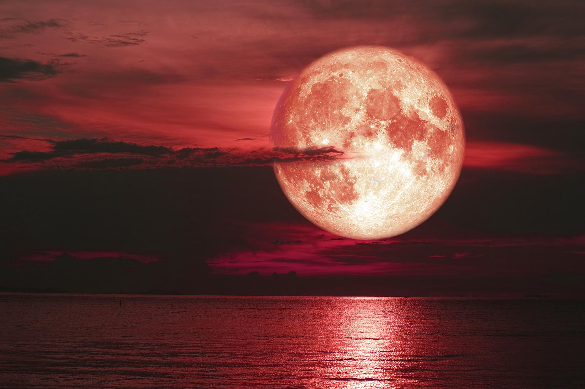

January:
- January 3-4: Quadrantids Meteor Shower, producing up to 40 meteors per hour, originating from the constellation Bootes.
- January 6: Full Moon, known as the Wolf Moon.
- January 21: New Moon, optimal for observing faint objects like galaxies.
- January 30: Mercury at Greatest Western Elongation, best time to view Mercury in the morning sky.
February:
- February 5: Full Moon, referred to as the Snow Moon.
- February 20: New Moon, great for observing faint celestial objects.
- February 20: Hybrid Solar Eclipse, visible in parts of Australia and Indonesia.
March:
- March 7: Full Moon, also known as the Worm Moon.
- March 20: March Equinox, first day of spring in the Northern Hemisphere.
- March 21: New Moon, ideal for observing faint celestial objects.
April:
- April 6: Full Moon, called the Pink Moon.
- April 11: Mercury at Greatest Eastern Elongation, optimal for viewing in the evening.
- April 20: New Moon, excellent for observing faint celestial objects.
- April 20: Hybrid Solar Eclipse, appearing as a total eclipse to some and annular to others.
- April 22-23: Lyrids Meteor Shower, with approximately 20 meteors per hour.

May:
- May 5: Full Moon, referred to as the Flower Moon.
- May 5: Penumbral Lunar Eclipse, visible in Asia, Australia, Europe, and Africa.
- May 5-6: Eta Aquarids Meteor Shower, producing up to 60 meteors per hour.
- May 19: New Moon, suitable for observing faint celestial objects.
- May 29: Mercury at Greatest Western Elongation, best time to view Mercury in the morning sky.
June:
- June 1-2: Mars in the Beehive, observable in constellation Cancer.
- June 4: Full Moon, known as the Strawberry Moon.
- June 4: Venus at Greatest Eastern Elongation, optimal for viewing in the evening.
- June 12-13: Venus in the Beehive, observable in constellation Cancer.
- June 18: New Moon, ideal for observing faint celestial objects.
- June 21: June Solstice, first day of summer in the Northern Hemisphere.
July:
- July 1: Conjunction of Venus and Mars in Leo.
- July 3: Full Moon, also a Supermoon.
- July 17: New Moon, great for observing faint celestial objects.
- July 29-30: Delta Aquarids Meteor Shower, with up to 20 meteors per hour.
August:
- August 1: Full Moon, another Supermoon.
- August 10: Mercury at Greatest Eastern Elongation, best time to view Mercury in the evening sky.
- August 12-13: Perseids Meteor Shower, producing up to 60 meteors per hour.
- August 16: New Moon, suitable for observing faint celestial objects.
- August 24: Moon Occults Antares, visible in central US and northern Florida.
- August 27: Saturn at Opposition, best time to view and photograph Saturn.
September:
- September 15: New Moon, excellent for observing faint celestial objects.
- September 19: Neptune at Opposition, best time to view and photograph Neptune.
- September 22: Mercury at Greatest Western Elongation, best time to view Mercury in the morning sky.
- September 23: September Equinox, first day of fall in the Northern Hemisphere.
- September 29: Full Moon, known as the Harvest Moon and a Supermoon.
October:
- October 8-9: Draconids Meteor Shower, producing about 10 meteors per hour.
- October 14: New Moon, great for observing faint celestial objects.
- October 14: Annular Solar Eclipse, visible in parts of North America, Central America, and Australia.
- October 20-21: Orionids Meteor Shower, with up to 20 meteors per hour.
- October 23: Venus at Greatest Western Elongation, best time to view Venus in the morning sky.
- October 28: Full Moon, known as the Hunters Moon.
- October 28: Partial Lunar Eclipse, visible in Europe, Asia, and Africa.
November:
- November 3: Jupiter at Opposition, best time to view and photograph Jupiter.
- November 4-5: Taurids Meteor Shower, producing about 5-10 meteors per hour.
- November 13: New Moon, ideal for observing faint celestial objects.
- November 13: Uranus at Opposition, best time to view Uranus.
- November 17-18: Leonids Meteor Shower, with up to 15 meteors per hour.
- November 27: Full Moon, known as the Cold Moon.
December:
- December 4: Mercury at Greatest Eastern Elongation, best time to view Mercury in the evening sky.
- December 12: New Moon, suitable for observing faint celestial objects.
- December 13-14: Geminids Meteor Shower, producing up to 120 meteors per hour.
- December 21-22: Ursids Meteor Shower, with about 5-10 meteors per hour.
- December 22: December Solstice, first day of winter in the Northern Hemisphere.
- December 27: Full Moon, known as the Cold Moon.
@2023 SpaceQuest
Terms and conditions
Privacy